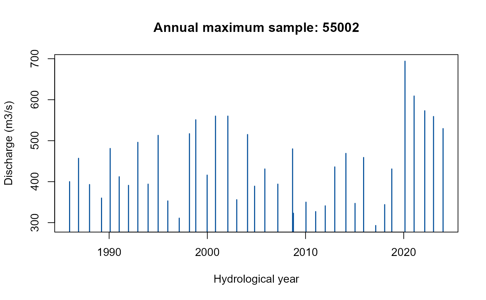
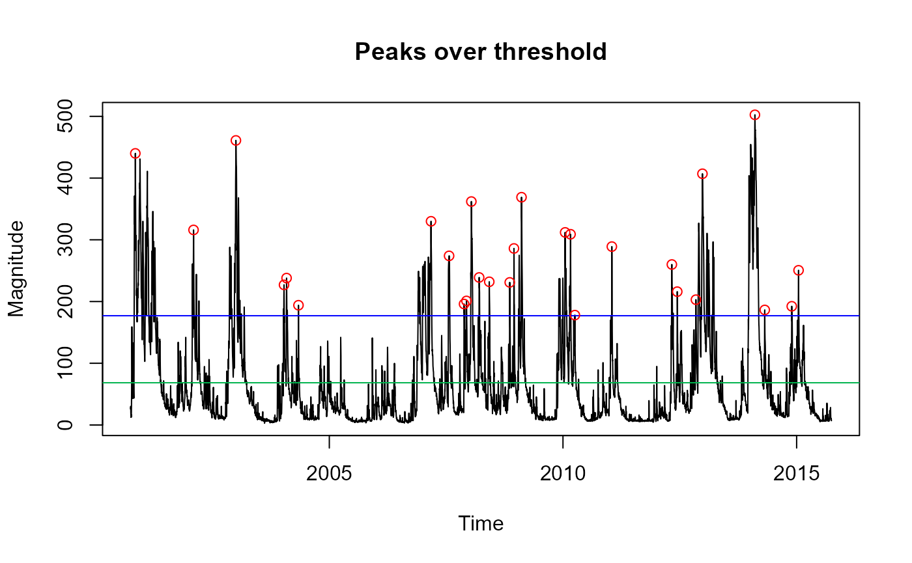

FEH statistical analysis
FEH-statistical-analysis.RmdIntroduction
This quick guide provides an overview of the core FEH functions that can be used to generate extreme flow estimates from single-site or pooling (gauged & ungauged) approaches. It is assumed that the reader has knowledge of the theory of these approaches; this guide is intended to demonstrate how to use the UKFE package rather than to explain the FEH statistical method.
The following table provides the key functions for implementing the FEH methods.
| Function | Purpose |
|---|---|
| GetCDs/CDsXML | Get catchment descriptors using the NRFA gauge reference number or import them from XML files downloaded from the FEH Web Service |
| GetAM/AMImport | Get annual maximum data from sites suitable for pooling or from AM files |
| QuickResults | Provides default pooling results (gauged, ungauged & fake ungauged), directly from catchment descriptors |
| QMED | Estimates QMED from catchment descriptors with donor options (either donor IDs or a number of donors - which are then automatically chosen based on distance) |
| DonAdj | Provides a list of donor candidates based on proximity to the study catchment |
| Pool | Creates a pooling group with the option of excluding one or more sites |
| H2 | The heterogeneity measure for pooling groups |
| DiagPlots | Provides a number of diagnostic plots to compare the sites in a pooling group |
| Zdists | The Zdist statistic to determine the distribution with the best fit to the pooling group |
| PoolEst | Flood estimates from the pooling group |
| Uncertainty | Quantifies uncertainty for gauged (enhanced single-site) and ungauged pooling groups |
| GenLog/GEV/GenPareto/Gumbel/Kappa3 | Four functions for each distribution to fit the distribution and obtain flood frequency estimates and growth factors |
| POTextract or POTt | Functions for extracting peaks over threshold data |
| AnnualStat | Extract annual statistics. The default is maximum, but any statistic can be used such as sum or mean. |
We need to load the package before we can use any of the functions:
library(UKFE)Overview and assumptions of the FEH statistical method
This section provides a brief overview of the FEH statistical method, and its core assumptions. Examples of how to apply the method can be found later.
The FEH statistical method comes under the broader term of ‘regional frequency analysis’ and employs the “index flood” procedure for estimating peak flows at a single location on a river line. The procedure has two main steps, which are multiplied together for a final result:
Estimate the index flood (in the FEH method, the index flood is QMED - the median annual maximum flow).
Calculate the growth curve: This provides growth factors as a function of return period and is a standardised model of the AMAX distribution. In this case a growth factor is the extreme flow of interestd (such as the 100-year flow) divided by QMED.
Multiplying the index flood by the growth curve scales the standardised growth factor to produce the flow estimate for the catchment of interest. When the catchment is gauged, the index flood is estimated as the median of the observed annual maximum sample (assuming suitable data quality). When the catchment is ungauged, the index flood is estimated using a multiple regression equation, using catchment descriptors as predictors.
The growth curve is estimated by pooling gauged data from catchments which are similar to the catchment of interest. A statistical distribution is assumed. Then, weighted average parameters of the fitted distribution (L-moment ratios) from the AMAX samples in the pooling group are used to estimate the growth curve.
There are numerous choices and possible adjustments which can be made for each step. The UKFE package, in general, provides default settings with no adjustments; however, these can be changed by the user.
There are several key underlying assumptions in FEH statistical analysis. As stated in Hosking and Wallis (1997), the index-flood procedure makes the following assumptions:
Observations at any given site are identically distributed.
Observations at any given site are serially independent.
Observations at different sites are independent.
Frequency distributions at different sites are identical apart from a scale factor.
The mathematical form of the regional growth curve is correctly specified.
The first of these leads to the assumption of stationarity
(i.e. observations of past flood events are assumed to represent the
behaviour of future events). Where this is not the case, non-stationary
methods can be applied. For example, non-stationary distributions can be
fitted using other software such as the nonstat R package
(Hecht and Zitzmann, 2025).
The QMED regression equation was calibrated using an approach similar to the generalised least squares method. This allows for covariance of the model residuals (errors). Firstly, the observed QMEDs (on which it was calibrated) were logarithmically transformed. The catchment descriptors used were also transformed. With this in mind, the assumptions of the QMED equation are as follows:
The relationship between the transformed independent variables (predictors) and the logarithmically transformed dependent variable (QMED) is linear.
Observations (observed QMEDs used in calibration) are independent of each other.
Model and sampling errors are independent of each other.
Model and sampling errors are normally distributed and have a mean of zero.
Predictor variables are independent.
The cross-correlation of model errors can be described by the distance between catchment centroids, and the form of the associated correlation matrix is known for the calibration process.
Getting catchment descriptors
One of the first steps in any FEH analysis is to obtain catchment descriptors (CDs). See the ‘Data input’ article for information on functions for importing CDs.
Quick results
Once you have some catchment descriptors, you can start to use many
of the FEH based functions. The full process, covered shortly, is
encompassed in the QuickResults() function. This provides
results from a default pooling group, automatically accounts for
urbanisation, and provides a donor transfer from 8 sites by default
(this number can be adjusted). Note that if the site is gauged and in
the PeakFlowData dataframe (and the descriptors are the same) the QMED
will default to the observed QMED. The default distribution is the
generalised logistic distribution. Further details and assumptions are
provided in the function’s help file.
First, we’ll obtain some CDs for site 55002 and then apply the QuickResults function. The results from the default analysis at gauge 55002 are printed to the console. This is a list with three elements. The first is a data frame with the following columns: return period (RP), peak flow estimates (Q) and growth factor estimates (GF). The second element is the estimated L-CV and L-skew (linear coefficients of variation and skewness). The third element provides distribution parameters (location, scale, and shape) for the chosen distribution (generalised logistic by ddault).
# Get catchment descriptors for NRFA site 55002 and save to an object called CDs.55002
CDs.55002 <- GetCDs(55002)
# Obtain estimates and plots for the gauged scenario using default settings
QuickResults(CDs.55002)
#> $Results
#> RP Q GF
#> 1 2 431 1.00
#> 2 5 552 1.28
#> 3 10 636 1.48
#> 4 20 725 1.68
#> 5 30 780 1.81
#> 6 50 855 1.98
#> 7 75 917 2.13
#> 8 100 965 2.24
#> 9 200 1090 2.52
#> 10 500 1270 2.95
#> 11 1000 1430 3.32
#>
#> $`Weighted Lmoment Ratios`
#> LCV LSKEW
#> 1 0.1792506 0.1652001
#>
#> $`Distribution Parameters`
#> loc scale shape
#> 1 426.5924 79.33469 -0.1603123Estimating QMED
There is a QMED() function which provides the ungauged
QMED (median annual maximum flow) estimate from catchment descriptors.
There is an option to adjust this using donor sites. The simplest case
is to provide catchment descriptors with no donor transfer:
# Estimate QMED from the catchment descriptors for site 55002
QMED(CDs.55002)
#> [1] 554By default, this gives urban adjusted QMED results.
To undertake a donor transfer (with the aim of improving the
estimate), you can state how many donors you wish to apply with the
no.Donors argument (this applied the closest - by catchment centroid - n
donors). Or you can specify a vector of IDs. In which case a list of
donor site candidates is necessary. For this, there is the
DonAdj() function, which provides the closest N
gauges (default of 10) to the site (geographically by catchment
centroid) that are suitable for QMED, along with catchment
descriptors.
# Identify donor catchments based on the catchment descriptors for site 55002
DonAdj(CDs.55002)
#> AREA ALTBAR ASPBAR ASPVAR BFIHOST19scaled BFIHOST19 BFIHOST DPLBAR
#> 55002 1894.00 297 128 0.08 0.416 0.421 0.472 95.63
#> 55007 1283.00 343 132 0.09 0.381 0.387 0.426 42.94
#> 55016 358.90 324 157 0.07 0.399 0.398 0.427 32.92
#> 55013 125.90 303 103 0.20 0.468 0.468 0.553 14.84
#> 55012 246.70 333 136 0.11 0.381 0.380 0.431 20.67
#> 56003 62.66 311 175 0.21 0.449 0.449 0.529 10.94
#> 56013 63.54 349 151 0.18 0.406 0.406 0.495 11.95
#> 55014 202.50 299 122 0.18 0.540 0.540 0.593 17.88
#> 55004 73.01 412 152 0.19 0.342 0.342 0.402 11.67
#> 55023 4016.00 227 127 0.10 0.494 0.496 0.542 130.30
#> DPSBAR FARL2015 FARL FPEXT LDP PROPWET RMED.1H RMED.1D RMED.2D
#> 55002 134.4 0.9586 0.967 0.0693 157.70 0.50 10.2 42.4 56.1
#> 55007 152.4 0.9544 0.960 0.0412 84.45 0.53 10.3 44.7 60.0
#> 55016 132.2 0.9987 0.998 0.0428 62.29 0.49 9.6 36.2 48.5
#> 55013 130.1 1.0000 0.999 0.0382 28.33 0.49 9.8 37.5 48.7
#> 55012 158.6 0.9954 0.997 0.0419 39.53 0.65 10.8 50.0 66.4
#> 56003 121.0 1.0000 0.999 0.0268 21.79 0.53 10.4 43.1 56.6
#> 56013 137.9 1.0000 1.000 0.0257 23.08 0.61 10.7 45.5 59.5
#> 55014 158.5 0.9984 0.996 0.0646 31.70 0.49 9.8 36.1 47.3
#> 55004 188.7 0.9938 1.000 0.0284 23.04 0.65 11.4 52.8 70.0
#> 55023 116.1 0.9691 0.979 0.0824 244.20 0.38 10.1 38.7 50.3
#> SAAR9120 SAAR6190 SAAR4170 SPRHOST URBEXT2015 URBEXT2000 URBEXT1990
#> 55002 1328 1230 1269 39.67 0.0049 0.0029 0.0020
#> 55007 1491 1386 1413 42.23 0.0037 0.0022 0.0010
#> 55016 1191 1066 1129 40.33 0.0059 0.0031 0.0018
#> 55013 1094 962 1086 34.31 0.0068 0.0046 0.0030
#> 55012 1722 1627 1639 42.75 0.0023 0.0020 0.0004
#> 56003 1318 1171 1257 35.20 0.0018 0.0026 0.0009
#> 56013 1476 1299 1426 38.25 0.0009 0.0003 0.0000
#> 55014 1086 977 1062 31.41 0.0060 0.0009 0.0023
#> 55004 1965 1845 1913 46.25 0.0025 0.0033 0.0009
#> 55023 1101 1010 1054 35.60 0.0110 0.0072 0.0067
#> DrainDens CEast CNorth Lcv LSkew LKurt L1 L2 N
#> 55002 1.196 306152 255939 0.1210 0.12100 0.0607 441.0 53.60 39
#> 55007 1.227 298496 263086 0.1840 0.21600 0.1500 574.0 106.00 84
#> 55016 1.244 309100 270212 0.0974 -0.00892 0.0581 119.0 11.50 49
#> 55013 1.116 323593 254543 0.1900 0.14000 0.1360 29.3 5.57 55
#> 55012 1.279 289404 250198 0.2090 0.12800 0.1580 200.0 41.80 55
#> 56003 1.220 302460 237118 0.2580 0.31800 0.3030 25.7 6.63 21
#> 56013 1.130 297636 238410 0.2120 0.35300 0.2960 39.8 8.46 52
#> 55014 1.169 324893 265277 0.2670 0.29600 0.1450 34.0 9.09 56
#> 55004 1.180 284963 252747 0.1590 0.25500 0.1260 61.0 9.73 45
#> 55023 1.166 326243 248368 0.1500 0.20600 0.0783 534.0 80.30 54
#> Suitability QMED QMEDcd Distance
#> 55002 Pooling 431.0 554.0 0.00000
#> 55007 Pooling 516.0 497.0 10.47349
#> 55016 QMED 121.0 138.0 14.57427
#> 55013 Pooling 27.9 40.9 17.49678
#> 55012 QMED 189.0 162.0 17.70465
#> 56003 QMED 23.5 31.1 19.17970
#> 56013 QMED 34.6 41.0 19.48815
#> 55014 QMED 26.7 46.9 20.93856
#> 55004 Pooling 56.5 71.6 21.42808
#> 55023 QMED 496.0 658.0 21.47017You can apply one or multiple donors using the DonorIDs argument
within the QMED() function. Or, as noted just specify a
number of donors. The following, shows both of these. Note that the one
specifying no.Donors = 3, will default to the observed QMED because site
55002 is both the catchment of interest and the closest donor and will
have all the weighting in the adjustment. Lastly you can also output all
the detail of the donors by using the
# Estimate QMED from the catchment descriptors for site 55002 using gauges with NRFA
# IDs 55007 and 55016 as donor sites
QMED(CDs.55002, DonorIDs = c(55007, 55016, 55013))
#> [1] 510
# Use the closest three donor sites
QMED(CDs.55002, no.Donors = 3)
#> [1] 431
#Use the specified three donors and return the associated details of the adjustment
QMED(CDs.55002, DonorIDs = c(55007, 55016, 55013), ReturnDetails = TRUE)
#> $QMEDEstimate
#> [1] 510
#>
#> $DonorDetails
#> ID alpha ObservedQMED QMED_DeUrbanised QMEDcdRural QMEDcdUrban
#> 1 55007 0.2532231 516.0 514.0 495.0 497.0
#> 2 55016 0.1749968 121.0 120.0 137.0 138.0
#> 3 55013 0.1771742 27.9 27.6 40.4 40.8
#> QMEDRatio Distance UAF
#> 1 1.040 10.47 1.004590
#> 2 0.877 14.57 1.007610
#> 3 0.684 17.50 1.010217The user should be aware of the following specifics about the UKFE implementation of QMED estimation. However, note that there is an inherent flexibility in ‘R’, so any code can be edited.
Note that the
QMEDDonEq()function can also be used, and a number of donors could be used in turn - the user would need to choose the donor weights.The
DonAdj()function only provides candidate donor sites from the NRFA “suitable for QMED and pooling” dataset. However, theQMEDDonEq()can be applied, which is entirely flexible regarding inputs.By default, the
QMED()function uses the URBEXT2015 catchment descriptor with an urban expansion (set to current year). There is an argument within the function calledUrbanExpansion, which is set toTRUE. This can be set toFALSEif required. There is also theUEF()function, which can be applied independently, and for any year.
Creating a pooling group
To create a pooling group, the Pool() function can be
used. If it is for a gauged site, the site will be automatically
included in the group, unless it is has an URBEXt2015 above UrbMax
(default 0.03). If you wish to include the urban site, the
include argument can be set be used (just put in the gauge
ID). Alternatively UrbMax can be increased (note that this will allow
other ubran sites into the group). There is a DeUrb
argument which is TRUE by default. It de-urbanises the LCVs
of site in the pooling group. To create and view the pooling group:
# Create a pooling group based on the catchment descriptors for site 55002 and
# save to an object called Pool.55002
Pool.55002 <- Pool(CDs = CDs.55002)
# View the pooling group
Pool.55002
#> AREA SAAR9120 FARL2015 FPEXT BFIHOST19scaled URBEXT2015 Lcv
#> 55002 1894.0 1328 0.9586 0.0693 0.416 0.0049 0.1213805
#> 8010 1746.0 1342 0.9377 0.0612 0.415 0.0019 0.1752132
#> 54005 2027.0 1250 0.9788 0.0919 0.439 0.0090 0.1387981
#> 21006 1506.0 1337 0.9629 0.0443 0.438 0.0043 0.1875159
#> 76007 2276.0 1316 0.9705 0.0741 0.486 0.0145 0.1998481
#> 12002 1833.0 1230 0.9804 0.0483 0.452 0.0024 0.1552385
#> 8006 2852.0 1249 0.9593 0.0525 0.433 0.0023 0.1762596
#> 84003 1093.0 1364 0.9597 0.0645 0.405 0.0067 0.1546625
#> 12001 1380.0 1270 0.9752 0.0468 0.451 0.0015 0.2232144
#> 76017 1372.0 1430 0.9536 0.0615 0.488 0.0090 0.2856425
#> 8005 1261.0 1439 0.9161 0.0589 0.402 0.0018 0.2292643
#> 84018 938.4 1402 0.9544 0.0616 0.400 0.0049 0.1755503
#> 55007 1283.0 1491 0.9544 0.0412 0.381 0.0037 0.1844367
#> LSkew LKurt QMED N SDM Discordancy Discordant
#> 55002 0.1210 0.0607 431 39 0.0000 1.4600 FALSE
#> 8010 0.0981 0.0908 241 72 0.2628 0.5300 FALSE
#> 54005 0.0385 0.1280 304 72 0.5002 0.9540 FALSE
#> 21006 0.2030 0.1600 397 63 0.5102 0.0484 FALSE
#> 76007 0.2250 0.2210 646 57 0.5294 0.5100 FALSE
#> 12002 0.0323 0.1210 556 33 0.5391 1.1400 FALSE
#> 8006 0.1580 0.1170 504 72 0.5418 0.0986 FALSE
#> 84003 0.2450 0.1970 283 69 0.5668 1.5500 FALSE
#> 12001 0.1670 0.2360 446 95 0.5942 1.6900 FALSE
#> 76017 0.3720 0.2270 494 22 0.6298 2.1200 FALSE
#> 8005 0.2070 0.0473 172 73 0.6524 2.4100 FALSE
#> 84018 0.2150 0.1790 248 56 0.7404 0.3290 FALSE
#> 55007 0.2160 0.1500 516 84 0.7462 0.1640 FALSEYou may now wish to assess the group for heterogeneity and see which
distribution fits best. The H2() function can be used to
check for heterogeneity.
# Check for heterogeneity
H2(Pool.55002)
#> [1] "1.41" "Group is homogenous"This group appears to be homogeneous, but if a group is
heterogeneous, you may wish to use the DiagPlots() function
to check for any outliers etc. You can also look at the discordancy
measures, which can be found in the last two columns of the pooling
group created.
# Create diagnostic plots to aid review of the pooling group
DiagPlots(Pool.55002)![Diagnostic plot consisting of 10 panels used to aid review of catchment descriptors. The first seven panels show histograms of all catchments, with each of the ten sites marked by small crosses, for the following variables: Area, SAAR, PROPWET, FARL, FPEXT, BFIHOST19, and URBEXT2000. Two scatter plots display L-skew versus L-CV and L-skew versus L-kurtosis. The next panel shows the catchment locations as points on a UK outline, plotted by Eastings and Northings. The final panel shows the average seasonality of peaks for all the sites in the pooling group. Together, the plots allow comparison of these sites against the distribution of all catchments. The ten sites appear generally central and unremarkable across descriptor space, indicating they are fairly typical relative to the wider catchment set.](FEH-statistical-analysis_files/figure-html/unnamed-chunk-10-1.png)
![Diagnostic plot consisting of 10 panels used to aid review of catchment descriptors. The first seven panels show histograms of all catchments, with each of the ten sites marked by small crosses, for the following variables: Area, SAAR, PROPWET, FARL, FPEXT, BFIHOST19, and URBEXT2000. Two scatter plots display L-skew versus L-CV and L-skew versus L-kurtosis. The next panel shows the catchment locations as points on a UK outline, plotted by Eastings and Northings. The final panel shows the average seasonality of peaks for all the sites in the pooling group. Together, the plots allow comparison of these sites against the distribution of all catchments. The ten sites appear generally central and unremarkable across descriptor space, indicating they are fairly typical relative to the wider catchment set.](FEH-statistical-analysis_files/figure-html/unnamed-chunk-10-2.png)
![Diagnostic plot consisting of 10 panels used to aid review of catchment descriptors. The first seven panels show histograms of all catchments, with each of the ten sites marked by small crosses, for the following variables: Area, SAAR, PROPWET, FARL, FPEXT, BFIHOST19, and URBEXT2000. Two scatter plots display L-skew versus L-CV and L-skew versus L-kurtosis. The next panel shows the catchment locations as points on a UK outline, plotted by Eastings and Northings. The final panel shows the average seasonality of peaks for all the sites in the pooling group. Together, the plots allow comparison of these sites against the distribution of all catchments. The ten sites appear generally central and unremarkable across descriptor space, indicating they are fairly typical relative to the wider catchment set.](FEH-statistical-analysis_files/figure-html/unnamed-chunk-10-3.png)
![Diagnostic plot consisting of 10 panels used to aid review of catchment descriptors. The first seven panels show histograms of all catchments, with each of the ten sites marked by small crosses, for the following variables: Area, SAAR, PROPWET, FARL, FPEXT, BFIHOST19, and URBEXT2000. Two scatter plots display L-skew versus L-CV and L-skew versus L-kurtosis. The next panel shows the catchment locations as points on a UK outline, plotted by Eastings and Northings. The final panel shows the average seasonality of peaks for all the sites in the pooling group. Together, the plots allow comparison of these sites against the distribution of all catchments. The ten sites appear generally central and unremarkable across descriptor space, indicating they are fairly typical relative to the wider catchment set.](FEH-statistical-analysis_files/figure-html/unnamed-chunk-10-4.png)
![Diagnostic plot consisting of 10 panels used to aid review of catchment descriptors. The first seven panels show histograms of all catchments, with each of the ten sites marked by small crosses, for the following variables: Area, SAAR, PROPWET, FARL, FPEXT, BFIHOST19, and URBEXT2000. Two scatter plots display L-skew versus L-CV and L-skew versus L-kurtosis. The next panel shows the catchment locations as points on a UK outline, plotted by Eastings and Northings. The final panel shows the average seasonality of peaks for all the sites in the pooling group. Together, the plots allow comparison of these sites against the distribution of all catchments. The ten sites appear generally central and unremarkable across descriptor space, indicating they are fairly typical relative to the wider catchment set.](FEH-statistical-analysis_files/figure-html/unnamed-chunk-10-5.png)
![Diagnostic plot consisting of 10 panels used to aid review of catchment descriptors. The first seven panels show histograms of all catchments, with each of the ten sites marked by small crosses, for the following variables: Area, SAAR, PROPWET, FARL, FPEXT, BFIHOST19, and URBEXT2000. Two scatter plots display L-skew versus L-CV and L-skew versus L-kurtosis. The next panel shows the catchment locations as points on a UK outline, plotted by Eastings and Northings. The final panel shows the average seasonality of peaks for all the sites in the pooling group. Together, the plots allow comparison of these sites against the distribution of all catchments. The ten sites appear generally central and unremarkable across descriptor space, indicating they are fairly typical relative to the wider catchment set.](FEH-statistical-analysis_files/figure-html/unnamed-chunk-10-6.png)
![Diagnostic plot consisting of 10 panels used to aid review of catchment descriptors. The first seven panels show histograms of all catchments, with each of the ten sites marked by small crosses, for the following variables: Area, SAAR, PROPWET, FARL, FPEXT, BFIHOST19, and URBEXT2000. Two scatter plots display L-skew versus L-CV and L-skew versus L-kurtosis. The next panel shows the catchment locations as points on a UK outline, plotted by Eastings and Northings. The final panel shows the average seasonality of peaks for all the sites in the pooling group. Together, the plots allow comparison of these sites against the distribution of all catchments. The ten sites appear generally central and unremarkable across descriptor space, indicating they are fairly typical relative to the wider catchment set.](FEH-statistical-analysis_files/figure-html/unnamed-chunk-10-7.png)
![Diagnostic plot consisting of 10 panels used to aid review of catchment descriptors. The first seven panels show histograms of all catchments, with each of the ten sites marked by small crosses, for the following variables: Area, SAAR, PROPWET, FARL, FPEXT, BFIHOST19, and URBEXT2000. Two scatter plots display L-skew versus L-CV and L-skew versus L-kurtosis. The next panel shows the catchment locations as points on a UK outline, plotted by Eastings and Northings. The final panel shows the average seasonality of peaks for all the sites in the pooling group. Together, the plots allow comparison of these sites against the distribution of all catchments. The ten sites appear generally central and unremarkable across descriptor space, indicating they are fairly typical relative to the wider catchment set.](FEH-statistical-analysis_files/figure-html/unnamed-chunk-10-8.png)
![Diagnostic plot consisting of 10 panels used to aid review of catchment descriptors. The first seven panels show histograms of all catchments, with each of the ten sites marked by small crosses, for the following variables: Area, SAAR, PROPWET, FARL, FPEXT, BFIHOST19, and URBEXT2000. Two scatter plots display L-skew versus L-CV and L-skew versus L-kurtosis. The next panel shows the catchment locations as points on a UK outline, plotted by Eastings and Northings. The final panel shows the average seasonality of peaks for all the sites in the pooling group. Together, the plots allow comparison of these sites against the distribution of all catchments. The ten sites appear generally central and unremarkable across descriptor space, indicating they are fairly typical relative to the wider catchment set.](FEH-statistical-analysis_files/figure-html/unnamed-chunk-10-9.png)
![Diagnostic plot consisting of 10 panels used to aid review of catchment descriptors. The first seven panels show histograms of all catchments, with each of the ten sites marked by small crosses, for the following variables: Area, SAAR, PROPWET, FARL, FPEXT, BFIHOST19, and URBEXT2000. Two scatter plots display L-skew versus L-CV and L-skew versus L-kurtosis. The next panel shows the catchment locations as points on a UK outline, plotted by Eastings and Northings. The final panel shows the average seasonality of peaks for all the sites in the pooling group. Together, the plots allow comparison of these sites against the distribution of all catchments. The ten sites appear generally central and unremarkable across descriptor space, indicating they are fairly typical relative to the wider catchment set.](FEH-statistical-analysis_files/figure-html/unnamed-chunk-10-10.png)
![Diagnostic plot consisting of 10 panels used to aid review of catchment descriptors. The first seven panels show histograms of all catchments, with each of the ten sites marked by small crosses, for the following variables: Area, SAAR, PROPWET, FARL, FPEXT, BFIHOST19, and URBEXT2000. Two scatter plots display L-skew versus L-CV and L-skew versus L-kurtosis. The next panel shows the catchment locations as points on a UK outline, plotted by Eastings and Northings. The final panel shows the average seasonality of peaks for all the sites in the pooling group. Together, the plots allow comparison of these sites against the distribution of all catchments. The ten sites appear generally central and unremarkable across descriptor space, indicating they are fairly typical relative to the wider catchment set.](FEH-statistical-analysis_files/figure-html/unnamed-chunk-10-11.png)
Let’s pretend that site 8010 and site 76017 are to be removed
(because they have the highest discordancy - in reality, a more thorough
analysis would be undertaken). To remove the sites, we recreate the
pooling group and use the exclude option. The function
automatically adds the next site(s) with the lowest similarity distance
measure if the total number of years of AMAX in the group has dropped
below 500 (or whatever we set as the N argument in the
Pool() function, which has a default of 800).
# Recreate the pooling group, excluding NRFA sites 8010 and 76017
Pool.55002 <- Pool(CDs = CDs.55002, exclude = c(8010, 76017))
# View the new pooling group
Pool.55002
#> AREA SAAR9120 FARL2015 FPEXT BFIHOST19scaled URBEXT2015 Lcv
#> 55002 1894.0 1328 0.9586 0.0693 0.416 0.0049 0.1213805
#> 54005 2027.0 1250 0.9788 0.0919 0.439 0.0090 0.1387981
#> 21006 1506.0 1337 0.9629 0.0443 0.438 0.0043 0.1875159
#> 76007 2276.0 1316 0.9705 0.0741 0.486 0.0145 0.1998481
#> 12002 1833.0 1230 0.9804 0.0483 0.452 0.0024 0.1552385
#> 8006 2852.0 1249 0.9593 0.0525 0.433 0.0023 0.1762596
#> 84003 1093.0 1364 0.9597 0.0645 0.405 0.0067 0.1546625
#> 12001 1380.0 1270 0.9752 0.0468 0.451 0.0015 0.2232144
#> 8005 1261.0 1439 0.9161 0.0589 0.402 0.0018 0.2292643
#> 84018 938.4 1402 0.9544 0.0616 0.400 0.0049 0.1755503
#> 55007 1283.0 1491 0.9544 0.0412 0.381 0.0037 0.1844367
#> 27007 912.6 1223 0.9732 0.0674 0.391 0.0088 0.2041479
#> 21021 3346.0 1169 0.9746 0.0460 0.437 0.0063 0.1646634
#> LSkew LKurt QMED N SDM Discordancy Discordant
#> 55002 0.1210 0.0607 431 39 0.0000 1.750 FALSE
#> 54005 0.0385 0.1280 304 72 0.5002 1.340 FALSE
#> 21006 0.2030 0.1600 397 63 0.5102 0.123 FALSE
#> 76007 0.2250 0.2210 646 57 0.5294 0.767 FALSE
#> 12002 0.0323 0.1210 556 33 0.5391 1.450 FALSE
#> 8006 0.1580 0.1170 504 72 0.5418 0.061 FALSE
#> 84003 0.2450 0.1970 283 69 0.5668 1.570 FALSE
#> 12001 0.1670 0.2360 446 95 0.5942 2.060 FALSE
#> 8005 0.2070 0.0473 172 73 0.6524 2.290 FALSE
#> 84018 0.2150 0.1790 248 56 0.7404 0.375 FALSE
#> 55007 0.2160 0.1500 516 84 0.7462 0.229 FALSE
#> 27007 0.1810 0.0729 278 54 0.8078 0.869 FALSE
#> 21021 0.1310 0.1440 766 55 0.8146 0.120 FALSE
# Check for heterogeneity
H2(Pool.55002)
#> [1] "0.626" "Group is homogenous"Choosing a distribution.
Once you are happy with the pooling group, you can check for the best
distribution. The Zdists() function can be used to do this.
This compares the Generalised Extreme Value (GEV), Generalised logistic
(GenLog), Gumbel, and Kappa3 distributions. The method behind it is
outlined in Hosking and Wallis (1997). Note that it is not the same as
the method detailed in Science Report SC050050 (Kjeldsen et
al., 2008). The difference is described in the function’s help file
and is necessary to encompass the two-parameter Gumbel distribution.
# Calculate goodness-of-fit measure
Zdists(Pool.55002)
#> [[1]]
#> GEV GenLog Gumbel Kappa3
#> 1 -0.216 -2.55 -0.213 -1.64
#>
#> [[2]]
#> [1] "Gumbel has the best fit"The output is a list, where the first element contains the Z-scores for each distribution, and the second element states which distribution has the best fit.
The L-CV and L-skew for each site are provided in the pooling group
and are derived from the AMAX data. If the user has further information,
for example, an extra year of data to provide a new annual maximum, the
L-CV and L-skew can be calculated using the Lcv() &
LSkew() functions. The user’s data can be pasted in or read
into the ‘R’ environment. Data can be read in using a function such as
read.csv(), or a column of data can be pasted in from Excel
by running the following code and then pressing “Ctrl+V” in the console
(assuming you have already copied the required data):
MyData <- scan()This creates a numeric vector called MyData that
contains your flow data. The Lcv() &
LSkew() functions take a numeric vector of flows as their
only input, so you can then use Lcv(MyData) and
LSkew(MyData) to derive the L-moment ratios.
The relevant results can be updated in the pooling group by applying
the LRatioChange() function. For example, if you wanted a
new pooling group with updated L-moment ratios for site 55002, the
following code could be used:
# Update the pooling group to use user-supplied L-CV and L-skew values for site 55002
UpdatedPool <- LRatioChange(Pool.55002, SiteID = 55002, lcv = 0.187, lskew = 0.164)
# View the updated pooling group
UpdatedPool
#> AREA SAAR9120 FARL2015 FPEXT BFIHOST19scaled URBEXT2015 Lcv
#> 55002 1894.0 1328 0.9586 0.0693 0.416 0.0049 0.1870000
#> 54005 2027.0 1250 0.9788 0.0919 0.439 0.0090 0.1387981
#> 21006 1506.0 1337 0.9629 0.0443 0.438 0.0043 0.1875159
#> 76007 2276.0 1316 0.9705 0.0741 0.486 0.0145 0.1998481
#> 12002 1833.0 1230 0.9804 0.0483 0.452 0.0024 0.1552385
#> 8006 2852.0 1249 0.9593 0.0525 0.433 0.0023 0.1762596
#> 84003 1093.0 1364 0.9597 0.0645 0.405 0.0067 0.1546625
#> 12001 1380.0 1270 0.9752 0.0468 0.451 0.0015 0.2232144
#> 8005 1261.0 1439 0.9161 0.0589 0.402 0.0018 0.2292643
#> 84018 938.4 1402 0.9544 0.0616 0.400 0.0049 0.1755503
#> 55007 1283.0 1491 0.9544 0.0412 0.381 0.0037 0.1844367
#> 27007 912.6 1223 0.9732 0.0674 0.391 0.0088 0.2041479
#> 21021 3346.0 1169 0.9746 0.0460 0.437 0.0063 0.1646634
#> LSkew LKurt QMED N SDM Discordancy Discordant
#> 55002 0.1640 0.0607 431 39 0.0000 1.750 FALSE
#> 54005 0.0385 0.1280 304 72 0.5002 1.340 FALSE
#> 21006 0.2030 0.1600 397 63 0.5102 0.123 FALSE
#> 76007 0.2250 0.2210 646 57 0.5294 0.767 FALSE
#> 12002 0.0323 0.1210 556 33 0.5391 1.450 FALSE
#> 8006 0.1580 0.1170 504 72 0.5418 0.061 FALSE
#> 84003 0.2450 0.1970 283 69 0.5668 1.570 FALSE
#> 12001 0.1670 0.2360 446 95 0.5942 2.060 FALSE
#> 8005 0.2070 0.0473 172 73 0.6524 2.290 FALSE
#> 84018 0.2150 0.1790 248 56 0.7404 0.375 FALSE
#> 55007 0.2160 0.1500 516 84 0.7462 0.229 FALSE
#> 27007 0.1810 0.0729 278 54 0.8078 0.869 FALSE
#> 21021 0.1310 0.1440 766 55 0.8146 0.120 FALSEFinal estimates (the growth curve and results)
To derive the final estimates, the PoolEst() function
can be applied to the pooling group. It is necessary to provide an input
for the QMED argument. Therefore, we will first obtain a
QMED estimate (in this case, we will use the data available from the
NRFA). To estimate QMED, we can either use the GetAM()
function and assess the data manually, or we can get it more directly
from the PeakFlowData data frame embedded within the
package (these are calculated as the median of the AMAX data (rejected
years excluded) from the NRFA Peak Flow Dataset). The following code
provides the latter.
# Extract QMED from the QMEDdata data frame within the UKFE package
GetQMED(55002)
#> [1] 431We can use functions within functions so we can include the above in
PoolEst() (two things to note; we need to include the CDs
and the Gauged = TRUE argument only impacts the uncertainty
calculation):
# Derive the growth curve and final flow estimates based on the pooling group and QMED
PoolEst(Pool.55002, CDs = CDs.55002, QMED = GetQMED(55002), Gauged = TRUE)
#> $Results
#> RP Q GF FSE
#> 1 2 431 1.00 1.0623
#> 2 5 549 1.27 1.0627
#> 3 10 632 1.47 1.0641
#> 4 20 718 1.67 1.0666
#> 5 30 772 1.79 1.0687
#> 6 50 844 1.96 1.0721
#> 7 75 905 2.10 1.0753
#> 8 100 950 2.20 1.0779
#> 9 200 1070 2.48 1.0852
#> 10 500 1250 2.89 1.0970
#> 11 1000 1400 3.24 1.1073
#>
#> $`Weighted Lmoment Ratios`
#> LCV LSKEW
#> 1 0.1760846 0.161419
#>
#> $`Distribution Parameters`
#> loc scale shape
#> 1 430.6703 76.19951 -0.1622549The results are printed to the console. This is a list with three elements. The first is a data frame with the following columns: return period (RP), peak flow estimates (Q), growth factor estimates (GF), and factorial standard error. The latter is calculating by bootstrapping the pooling group and sampling from the QMED uncertainty. The second element is the estimated pooled L-CV and L-skew (linear coefficients of variation and skewness). The third element provide parameters (location, scale, and, shape) for the chosen distribution.
The user should be aware of the following specifics about how UKFE employs the pooled method:
The default QMED FSE is set to 1.5. This value represents the factorial standard error associated with the combined model and sampling uncertainty of the QMED model. You can update QMED FSE with the fseQMED argument. Generally it should be lower if donor catchments are applied or if the QMED is estimated from a gauged sample.
The default distribution applied is the generalised logistic distribution.
The final FSE comprises the FSE associated with QMED estimation and growth curve estimation. The FSE associated with the growth curve quantifies sampling error (aleatoric uncertainty) only. The FSE associated with QMED includes model uncertainty. In general, the uncertainty associated with the modelling process or the hydrometric data collection is not included in the FSE. Many choices are made during the process, and deriving a range of results from a range of justifiable choices is a way to quantify some of the epistemic uncertainty.
By default, urban adjustment is applied. The user can change this with the
UrbAdjargument, by setting it toFALSE.
The EVPool() function can be used to plot a growth
curve.
# Plot the growth curve
EVPool(Pool.55002, gauged = TRUE)![Plot showing growth curves from FEH QuickResults calculations. Pooled estimates are shown as a solid line, single-site estimates as a dashed green line, and observed flood data as blue circles. The x-axis shows the logistic reduced variate and the y-axis shows Q/QMED, that is, flow divided by the median annual flood. A scale for the return period is displayed at the bottom right. The plot illustrates how well the pooled and single-site growth curves map onto the observed flood data. Neither curve matches all observations exactly, but both provide a reasonable fit overall. Both curves follow the expected growth-curve shape, with increasing discharge at higher return periods.](FEH-statistical-analysis_files/figure-html/unnamed-chunk-17-1.png)
For the ungauged catchment, the same process can be followed. First, we’ll exclude the site from our pooling group. We will assume we went through a rigorous pooling group analysis and concluded all was well:
# Recreate the pooling group, excluding NRFA gauge 55002 to make it an ungauged analysis
PoolUG.55002 <- Pool(CDs.55002, exclude = 55002)
# View the new pooling group
PoolUG.55002
#> AREA SAAR9120 FARL2015 FPEXT BFIHOST19scaled URBEXT2015 Lcv
#> 8010 1746.0 1342 0.9377 0.0612 0.415 0.0019 0.1752132
#> 54005 2027.0 1250 0.9788 0.0919 0.439 0.0090 0.1387981
#> 21006 1506.0 1337 0.9629 0.0443 0.438 0.0043 0.1875159
#> 76007 2276.0 1316 0.9705 0.0741 0.486 0.0145 0.1998481
#> 12002 1833.0 1230 0.9804 0.0483 0.452 0.0024 0.1552385
#> 8006 2852.0 1249 0.9593 0.0525 0.433 0.0023 0.1762596
#> 84003 1093.0 1364 0.9597 0.0645 0.405 0.0067 0.1546625
#> 12001 1380.0 1270 0.9752 0.0468 0.451 0.0015 0.2232144
#> 76017 1372.0 1430 0.9536 0.0615 0.488 0.0090 0.2856425
#> 8005 1261.0 1439 0.9161 0.0589 0.402 0.0018 0.2292643
#> 84018 938.4 1402 0.9544 0.0616 0.400 0.0049 0.1755503
#> 55007 1283.0 1491 0.9544 0.0412 0.381 0.0037 0.1844367
#> 27007 912.6 1223 0.9732 0.0674 0.391 0.0088 0.2041479
#> LSkew LKurt QMED N SDM Discordancy Discordant
#> 8010 0.0981 0.0908 241 72 0.2628 0.474 FALSE
#> 54005 0.0385 0.1280 304 72 0.5002 1.020 FALSE
#> 21006 0.2030 0.1600 397 63 0.5102 0.080 FALSE
#> 76007 0.2250 0.2210 646 57 0.5294 0.505 FALSE
#> 12002 0.0323 0.1210 556 33 0.5391 1.130 FALSE
#> 8006 0.1580 0.1170 504 72 0.5418 0.156 FALSE
#> 84003 0.2450 0.1970 283 69 0.5668 1.880 FALSE
#> 12001 0.1670 0.2360 446 95 0.5942 2.120 FALSE
#> 76017 0.3720 0.2270 494 22 0.6298 2.330 FALSE
#> 8005 0.2070 0.0473 172 73 0.6524 1.850 FALSE
#> 84018 0.2150 0.1790 248 56 0.7404 0.427 FALSE
#> 55007 0.2160 0.1500 516 84 0.7462 0.255 FALSE
#> 27007 0.1810 0.0729 278 54 0.8078 0.776 FALSE
# Estimate QMED from the catchment descriptors with two donors (note that the QMED
# value needs to be extracted using `$QMEDs.adj` as there are three elements to the
# output when two donors are used and the PoolEst function expects just the QMED value)
CDsQmed.55002 <- QMED(CDs.55002, DonorIDs = c(55007, 55016))
# Use the pooling group and the ungauged QMED estimate to provide the pooled estimates
Results55002 <- PoolEst(PoolUG.55002, QMED = CDsQmed.55002, CDs = CDs.55002)
# Print the results
Results55002
#> $Results
#> RP Q GF FSE
#> 1 2 544 1.00 1.5000
#> 2 5 704 1.29 1.5043
#> 3 10 817 1.50 1.5146
#> 4 20 937 1.72 1.5309
#> 5 30 1010 1.86 1.5436
#> 6 50 1110 2.05 1.5632
#> 7 75 1200 2.20 1.5818
#> 8 100 1260 2.32 1.5967
#> 9 200 1430 2.63 1.6384
#> 10 500 1690 3.10 1.7069
#> 11 1000 1910 3.51 1.7689
#>
#> $`Weighted Lmoment Ratios`
#> LCV LSKEW
#> 1 0.1870044 0.1743021
#>
#> $`Distribution Parameters`
#> loc scale shape
#> 1 538.5441 103.6098 -0.1715526
# Plot a growth curve for the pooling group
EVPool(PoolUG.55002)![Plot showing how multiple single-site growth curves are pooled to form the default ‘fake ungauged’ growth curve. The x-axis shows the logistic reduced variate and the y-axis shows Q/QMED, that is, flow divided by the median annual flood. Several solid black lines represent growth curves from individual sites, and a red dashed line represents the pooled growth curve with the target site excluded. All curves follow the expected growth-curve shape, with increasing discharge at higher return periods. The pooled curve lies within the spread of the individual site curves and, as expected, closely resembles their average, illustrating how pooling smooths variability to produce a representative ungauged growth curve.](FEH-statistical-analysis_files/figure-html/unnamed-chunk-18-1.png)
The same results are provided as for the gauged case.
Single site analysis
The quickest way to get results for a single sample are the
GEV(), GenLog(), Kappa3(),
Gumbel() and GenPareto() functions. For
example, the following code can be used to obtain a 75-year return
period estimate for an AMAX sample called MyAMAX using the
generalised logistic distribution:
GenLogAM(MyAMAX, RP = 75)An annual maximum series can be obtained for sites suitable for
pooling and QMED using the GetAM(). The
AMImport() or GetDataNRFA functions can also be used (see
the ‘Data input’ article). We will retrieve and plot the AMAX for our
site 55002:
# Extract the AMAX data for NRFA site 55002
AM.55002 <- GetAM(55002)
# View the head of the AMAX series
head(AM.55002)
#> Date Flow id
#> 1 1985-12-22 400 55002
#> 2 1986-11-20 457 55002
#> 3 1988-01-03 393 55002
#> 4 1989-03-24 360 55002
#> 5 1990-02-08 481 55002
#> 6 1991-01-10 412 55002
# Plot the AMAX data
AMplot(AM.55002)
The AMplot() function returns a bar plot of the AMAX
series.
There are four functions for each of the GEV, GenLog, Gumbel, Kappa3,
and GenPareto distributions. In the function names below,
XXX should be replaced by the distribution prefix
(GEV, GenLog, Gumbel,
Kapp3, or GenPareto). For the Generalised
Pareto distribution, the first function is named
GenParetoPOT() instead of GenParetoAM().
XXXAM()- estimates return levels or return periods directly from an AMAX (or POT for GenPareto) series.XXXEst()- estimates return levels or return periods from user-supplied parameters.XXXGF()- provides the growth factor as a function of L-CV, L-skew, and RP (the Gumbel version only requires the L-CV and RP).XXXPars- estimates distribution parameters from an AMAX or POT series (using L-moments, or MLE in some cases).
We can look at the fit of the distributions using the
ERPlot() or EVPlot() functions. By default,
ERPlot() compares the percentage difference between
simulated results with the observed for each rank of the data. Another
option (see the ERType argument) compares the simulated
flows for each rank of the sample with the observed flows of the same
rank. For both plots, 500 simulated samples are used. The function’s
help file provides more information, including how to compare the
distribution estimated from pooling with the observed data. This is an
updated version of that described in Hammond (2019).
The EVPlot() function plots the extreme value frequency
curve or growth curve with observed sample points. The uncertainty is
quantified by parametric bootstrapping.
The following code generates an extreme rank plot and an extreme value plot using the GEV distribution:
# Generate an extreme rank plot for the AMAX data for NRFA site 55002 and the GEV
# distribution and set a user-defined title (using the 'main' argument)
ERPlot(AM.55002$Flow, dist = "GEV", main = "Extreme rank plot for NRFA site 55002: GEV")![Extreme rank frequency curve illustrating uncertainty around the estimated growth curve. The x-axis shows the rank and the y-axis shows the percent difference. Observed data are shown as blue circles, plotting along the 0% line. The central modelled curve, shown as a solid line, tracks closely to the observations, while dashed lines represent the 90% bootstrapped confidence interval. The uncertainty bounds remain narrow through the central portion of the curve and expand slightly toward the lower and upper ranks.](FEH-statistical-analysis_files/figure-html/unnamed-chunk-21-1.png)
# Generate an extreme value plot for the AMAX data for NRFA site 55002 and the GEV
# distribution and set a user-defined title (using the 'Title' argument)
EVPlot(AM.55002$Flow, dist = "GEV", Title = "Extreme value plot for NRFA site 55002: GEV")![Extreme rank frequency curve illustrating uncertainty around the estimated growth curve. The x-axis shows the logistic reduced variate and the y-axis shows Q/QMED, that is, flow divided by the median annual flood. Observed data are shown as blue circles, forming a concave-up increasing curve. The central modelled estimate, shown as a solid line, tracks these observations closely. Dashed lines represent the 90% bootstrapped confidence interval, which remains tight across the centre of the distribution and widens toward the extremes.](FEH-statistical-analysis_files/figure-html/unnamed-chunk-22-1.png)
As an example, we can estimate the 100-year flow. Then, estimate the return period of the maximum observed flow. Make sure to select the “Flow” column.
# Estimate the 100-year flow directly from the AMAX data for NRFA site 55002 using
# the GEV distribution
GEVAM(AM.55002$Flow, RP = 100)
#> [1] 718.969
# Estimate the return period of the maximum observed flow directly from the AMAX
# data using the GEV distribution
GEVAM(AM.55002$Flow, q = max(AM.55002$Flow))
#> [1] 65.4758We can also estimate the parameters of the GEV from the data, using the default L-moments, and estimate quantiles as a function of return period (and vice versa) from user input parameters.
# Estimate the parameters of the GEV distribution from the AMAX data for NRFA site 55002
GEVPars55002 <- GEVPars(AM.55002$Flow)
# View the parameters
GEVPars55002
#> Loc Scale Shape
#> 1 399.6551 82.72261 0.07862905
# Estimate the 75-year flow using these GEV parameters
GEVEst(loc = GEVPars55002$Loc, scale = GEVPars55002$Scale, shape = GEVPars55002$Shape, RP = 75)
#> [1] 702.106If we derive L-moments for the site, we can then estimate growth
factors. The LMoments() function does this. We can also
calculate L-CV and L-skew separately using the Lcv() and
LSkew() functions.
# Estimate the 75-year GEV growth factor from the L-moments for the AMAX data for
# NRFA site 55002
GEVGF(lcv = Lcv(AM.55002$Flow), lskew= LSkew(AM.55002$Flow), RP = 75)
#> [1] 1.634548We can estimate the 75-year flow by combining this latter result with QMED (the median of the AMAX record).
# Estimate the 75-year flow by multiplying the growth factor by the median AMAX flow
GEVGF(lcv = Lcv(AM.55002$Flow), lskew= LSkew(AM.55002$Flow), RP = 75) * median(AM.55002$Flow)
#> [1] 704.4903This gives a different 75-year flow estimate from the more direct estimate using the GEV parameters. This is because the former calculates the T-year peak directly, whereas the latter assumes a distribution scaled by the index flood.
Peaks over threshold
A peaks over threshold (POT) series can also be obtained from a time
series using the POTextract() function. A daily sample of
the Thames at Kingston flow is included in the package for example
purposes (the data frame ThamesPQ). The
POTextract() function can be used on a single vector or a
data frame, with dates in the first column and the time series of
interest in the second. In the ThamesPQ data frame, the
Thames flow is in the third column and the date in the first. Therefore,
the POT series can be extracted as follows:
# Extract a POT series from the Thames at Kingston daily mean flow data, selecting
# the first and third columns from the ThamesPQ data frame which contain the date
# and flow data respectively. The threshold is set as the 90th percentile.
POT.Thames <- POTextract(ThamesPQ[, c(1, 3)], thresh = 0.9)
#> [1] "Peaks per year: 1.867263"
# View the output
POT.Thames
#> Date peak
#> 3 2000-11-07 440.0
#> 25 2002-02-05 316.0
#> 34 2003-01-02 461.0
#> 40 2004-01-13 227.0
#> 41 2004-02-02 238.0
#> 43 2004-05-05 194.0
#> 56 2007-03-07 330.0
#> 58 2007-07-26 274.0
#> 59 2007-11-20 196.0
#> 62 2007-12-09 201.0
#> 64 2008-01-16 362.0
#> 66 2008-03-17 239.0
#> 67 2008-06-04 232.0
#> 68 2008-11-11 231.0
#> 69 2008-12-14 286.0
#> 72 2009-02-11 369.0
#> 77 2010-01-18 312.0
#> 82 2010-03-01 309.0
#> 83 2010-04-04 178.0
#> 84 2011-01-18 289.0
#> 85 2012-05-01 260.0
#> 87 2012-06-12 216.0
#> 88 2012-11-05 203.0
#> 91 2012-12-26 407.0
#> 106 2014-02-09 502.5
#> 110 2014-04-27 186.4
#> 111 2014-11-24 192.3
#> 113 2015-01-16 250.6This produces a figure showing the daily mean flow data with peaks over the threshold shown as red circles. The blue line is the threshold, and the green line is the mean flow. Independent peaks are chosen above the threshold. If peaks are separated by a drop below the mean flow (green line), they are considered independent. More details can be found in the function’s help file (including other options for defining independence and how to rename axis labels and the plot title).
Note that you can also use the POTt() function for
extracting peaks over threshold. It works significantly faster, but only
has the option of separating peaks by the number of timesteps.
The POT approach is similar to the AMAX approach, except that we need
to convert from the POT RP scale to the annual RP scale. To do so, the
functions have a peaks per year (ppy) argument. The
POTextract() function provides the number of peaks per year
(in this case, 1.867). To estimate the associated 100-year daily mean
flow peak, the GenPareto function can be used as follows:
# Estimate the 100-year flow for the Thames at Kingston using the extracted POT series
GenParetoPOT(POT.Thames$peak, ppy = 1.867, RP = 100)
#> [1] 605.432Uncertainty
Methods for quantifying aleatoric (sampling) uncertainty are provided here for three estimation methods: single-site, gauged pooling, and ungauged pooling. The uncertainty is predicated on forming a sampling distribution for the statistic of interest, and in the three cases (single site, gauged pooling, and ungauged pooling), it is done using bootstrapping. In the pooling approaches (gauged and ungauged), the whole pooling group is bootstrapped, and the weighted estimates provided on every iteration.
Single-site
Extract an annual maximum sample with the following code.
# Extract the AMAX for NRFA site 55002
AM.55002 <- GetAM(55002)The uncertainty for the 100-year flow can be estimated using the
Bootstrap() function. The 95% confidence intervals are
provided by default, but this can be adjusted using the
Conf argument. The lower limit is provided in the ‘Lower’
column and the upper limit in the ‘Upper’ column.
Note that the Bootstrap() function can also be applied
for any function/statistic, and the sampling distribution developed can
be returned.
# Estimate uncertainty for the GEV-estimated 100-year flow
Bootstrap(AM.55002$Flow, Stat = GEVAM, RP = 100)
#> Mean Lower Upper
#> 1 709 609 827Ungauged pooling
The Uncertainty() function can be used for the pooled
estimates to quantify the sampling uncertainty. The estimated QMED and
the pooling group are required. Furthermore, the factorial standard
error needs to be provided for the ungauged case, using the
fseQMED argument (the default is 1.5). Note that by default
the generalised logistic distribution is selected for the estimates, but
this can be changed.
The following example to estimate uncertainty for the ungauged pooled
estimates for NRFA site 55002 uses the catchment descriptors object
created earlier (CDs.55002). This provides a dataframe with
return period in the first column and Factorial Standard Error (FSE) in
the second. For confidence intervals you can divide and multiply your
estimates for each return period by the FSE. For 95% intervals do the
same but raise the FSE to the power of 1.96.
# Estimate QMED for site 55002 from catchment descriptors using two donors
QMEDEst <- QMED(CDs.55002, DonorIDs = c(55007, 55016))
# Create an ungauged pooling group for site 55002
PoolUG.55002 <- Pool(CDs.55002, exclude = 55002)
# Estimate the uncertainty of the pooling results
Uncertainty(PoolUG.55002, QMEDEstimate = QMEDEst)
#> RP FSE
#> 1 2 1.5000
#> 2 5 1.5104
#> 3 10 1.5213
#> 4 20 1.5363
#> 5 30 1.5473
#> 6 50 1.5640
#> 7 75 1.5797
#> 8 100 1.5922
#> 9 200 1.6274
#> 10 500 1.6854
#> 11 1000 1.7383Gauged pooling
The gauged case is similar to the above, but the Gauged
argument is set to TRUE, and there is no need to set
QMEDEstimate; it is derived from the observed AMAX if
Gauged = TRUE.
It is important to note that when Gauged equals
TRUE, the top site in the pooling group is assumed to be
the “gauged” site of interest. This will happen by default because the
similarity distance measure should be zero - assuming the that “gauged”
site is within the NRFAData data frame.
The following example uses the gauged pooling group we previously derived:
# Create a gauged pooling group for site 55002
Pool.55002 <- Pool(CDs = CDs.55002, exclude = c(8010, 76017))
# Estimate the uncertainty of the pooling results
Uncertainty(Pool.55002, Gauged = TRUE)
#> RP FSE
#> 1 2 1.0576
#> 2 5 1.0567
#> 3 10 1.0575
#> 4 20 1.0598
#> 5 30 1.0619
#> 6 50 1.0653
#> 7 75 1.0688
#> 8 100 1.0716
#> 9 200 1.0796
#> 10 500 1.0927
#> 11 1000 1.1042